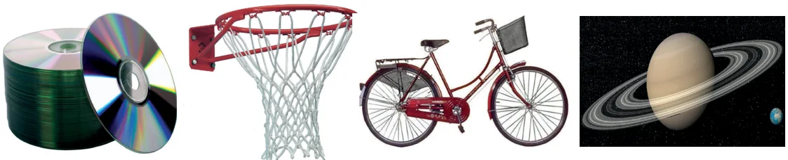
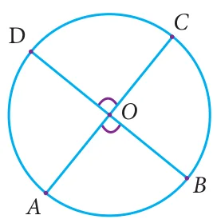
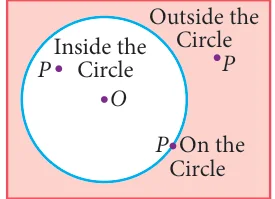
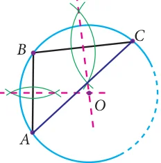

Circles are geometric shapes you can see all around you. The significance of the concept of a circle can be well understood from the fact that the wheel is one of the ground-breaking inventions in the history of mankind.

A circle, you can describe, is the set of all points in a plane at a constant distance from a fixed point. The fixed point is the centre of the circle; the constant distance corresponds to a radius of the circle.

A line that cuts the circle in two points is called a secant of the circle.
A line segment whose end points lie on the circle is called a chord of the circle.
A chord that passes through the centre of the circle is called a diameter of the circle. The circumference of a circle is its boundary. (We use the term perimeter in the case of polygons).

In Fig.4.44, we see that all the line segments meet at two points on the circle. These line segments are called the chords of the circle. So, a line segment joining any two points on the circle is called a chord of the circle. In this figure \(AB\), \(PQ\) and \(RS\) are the chords of the circle.

Now place four points \(P\), \(R\), \(Q\) and \(S\) on the same circle (Fig.4.45), then \(PRQ\) and \(QSP\) are the continuous parts (sections) of the circle. These parts (sections) are to be denoted by \(\overset{\frown}{PRQ}\) and \(\overset{\frown}{QSP}\) or simply by \(\overset{\frown}{PQ}\) and \(\overset{\frown}{QP}\) . This continuous part of a circle is called an arc of the circle. Usually the arcs are denoted in anti-clockwise direction.
Now consider the points \(P\) and \(Q\) in the circle (Fig.4.45). It divides the whole circle into two parts. One is longer and another is shorter. The longer one is called major arc \(\overset{\frown}{QP}\) and shorter one is called minor arc \(\overset{\frown}{PQ}\) .

Now in (Fig.4.46), consider the region which is surrounded by the chord \(PQ\) and major arc \(\overset{\frown}{QP}\) . This is called the major segment of the circle. In the same way, the segment containing the minor arc and the same chord is called the minor segment.
Note
A diameter of a circle is:
- the line segment which bisects the circle.
- the largest chord of a circle.
- a line of symmetry for the circle.
- twice in length of a radius in a circle.

In (Fig.4.47), if two arcs \(\overset{\frown}{AB}\) and \(\overset{\frown}{CD}\) of a circle subtend the same angle at the centre, they are said to be congruent arcs and we write,
\(\overset{\frown}{AB} \equiv \overset{\frown}{CD}\) implies \(m\overset{\frown}{AB} = m\overset{\frown}{CD}\)
implies \(\angle AOB = \angle COD\)

Now, let us observe (Fig.4.48). Is there any special name for the region surrounded by two radii and arc? Yes, its name is sector. Like segment, we find that the minor arc corresponds to the minor sector and the major arc corresponds to the major sector.
Concentric Circles
Circles with the same centre but different radii are said to be concentric.
Here are some real-life examples:

Fig. 4.49
Congruent Circles
Two circles are congruent if they are copies of one another or identical. That is, they have the same size. Here are some real life examples:

Position of a Point with respect to a Circle
Consider a circle in a plane (Fig.4.51). Consider any point \(P\) on the circle. If the distance from the centre \(O\) to the point \(P\) is \(OP\), then

- \(OP =\) radius (If the point \(P\) lies on the circle)
- \(OP <\) radius (If the point \(P\) lies inside the circle)
- \(OP >\) radius(If the point P lies outside the circle)
So, a circle divides the plane on which it lies into three parts.
Progress Check
Say True or False
- Every chord of a circle contains exactly two points of the circle.
- All radii of a circle are of same length.
- Every radius of a circle is a chord.
- Every chord of a circle is a diameter.
- Every diameter of a circle is a chord.
- There can be any number of diameters for a circle.
- Two diameters cannot have the same end-point.
- A circle divides the plane into three disjoint parts.
- A circle can be partitioned into a major arc and a minor arc.
- The distance from the centre of a circle to the circumference is called a radius.
Thinking Corner
- How many sides does a circle have ?
- Is circle, a polygon?
4.4.1 Circle Through Three Points
We have already learnt that there is one and only one line passing through two points. In the same way, we are going to see how many circles can be drawn through a given point, and through two given points. We see that in both cases there can be infinite number of circles passing through a given point \(P\) (Fig.4.52) , and through two given points \(A\) and \(B\) (Fig.4.53).

Now consider three collinear points \(A\), \(B\) and \(C\) (Fig.4.14). Can we draw a circle passing through these three points? Think over it. If the points are collinear, we can't?

If the three points are non collinear, they form a triangle (Fig.4.55). Recall the construction of the circumcentre. The intersecting point of the perpendicular bisector of the sides is the circumcentre and the circle is circumcircle.
Therefore from this we know that, there is a unique circle which passes through \(A\), \(B\) and \(C\). Now, the above statement leads to a result as follows.
Theorem 6 There is one and only one circle passing through three non-collinear points.